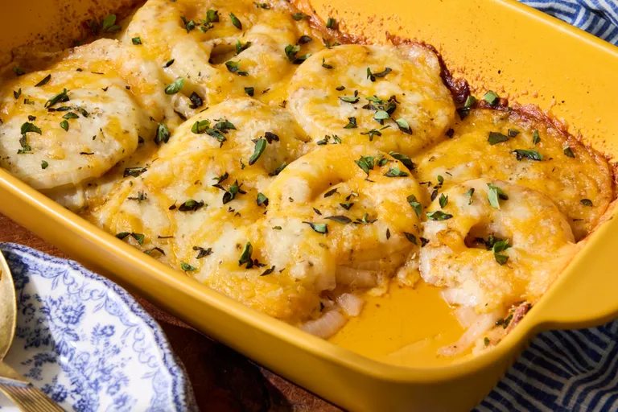

Tennessee Onions
- 3 sweet onions, sliced into 1/4-inch slices
- 1 1/2 teaspoons Cajun seasoning (or more to taste)
- 1 teaspoon garlic powder
- 4 tablespoons butter, cut into 6 slices
- 1 cup shredded Cheddar cheese
- 1 cup shredded mozzarella cheese
- 1/2 teaspoon dried oregano
- 1/2 cup grated Parmesan cheese